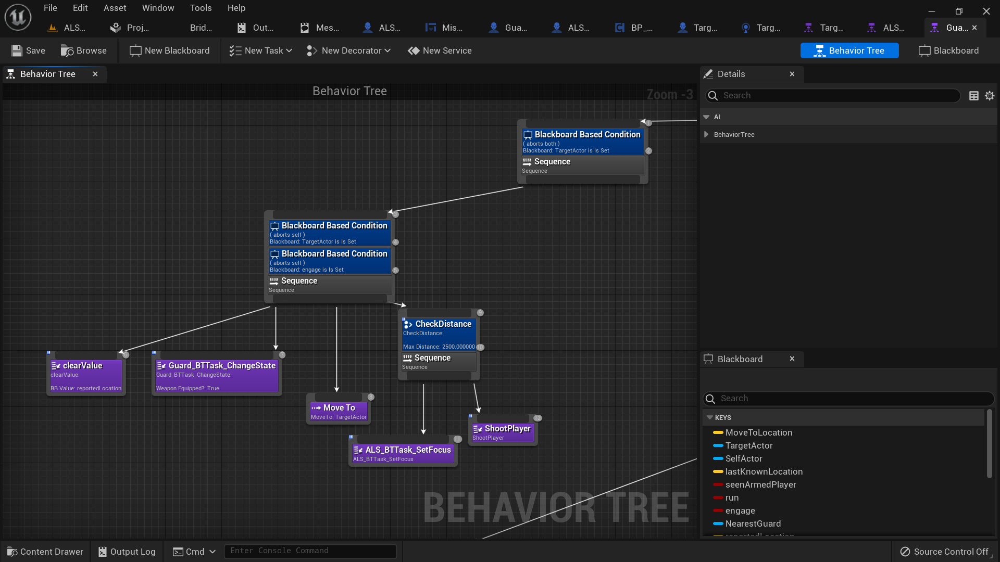

Algorytmy i techniki |
| Wybór odpowiednich algorytmów i technik AI zależy od potrzeb gry. Popularne podejścia to drzewa decyzyjne, sieci neuronowe, algorytmy uczenia maszynowego i wiele innych. Istnieje wiele bibliotek i narzędzi dostępnych do implementacji różnych rodzajów AI. | //dodaj screena
|
|  |
Skomplikowane zachowania |
| AI może wykazywać skomplikowane zachowania, takie jak nawigacja po terenie, rozwiązywanie zagadek, zarządzanie zasobami czy interakcje z graczem. Tworzenie AI o różnorodnych umiejętnościach i zachowaniach może wzbogacić rozgrywkę. | //add img
 |
|
Testowanie i balansowanie |
| Testowanie AI jest kluczowe. Muszę się upewniać, że AI zachowuje się zgodnie z założeniami i nie wprowadza nieoczekiwanych trudności lub błędów. Balansowanie poziomu trudności AI to ważna część procesu. |